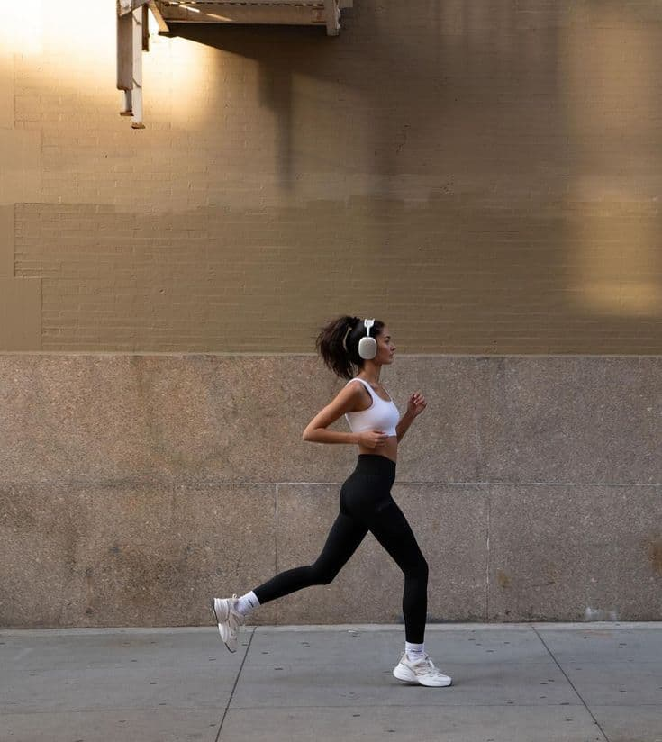
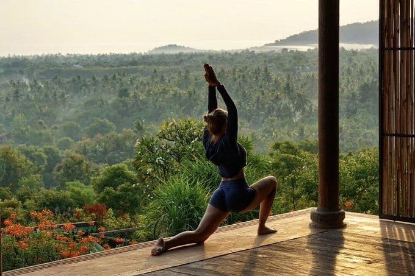
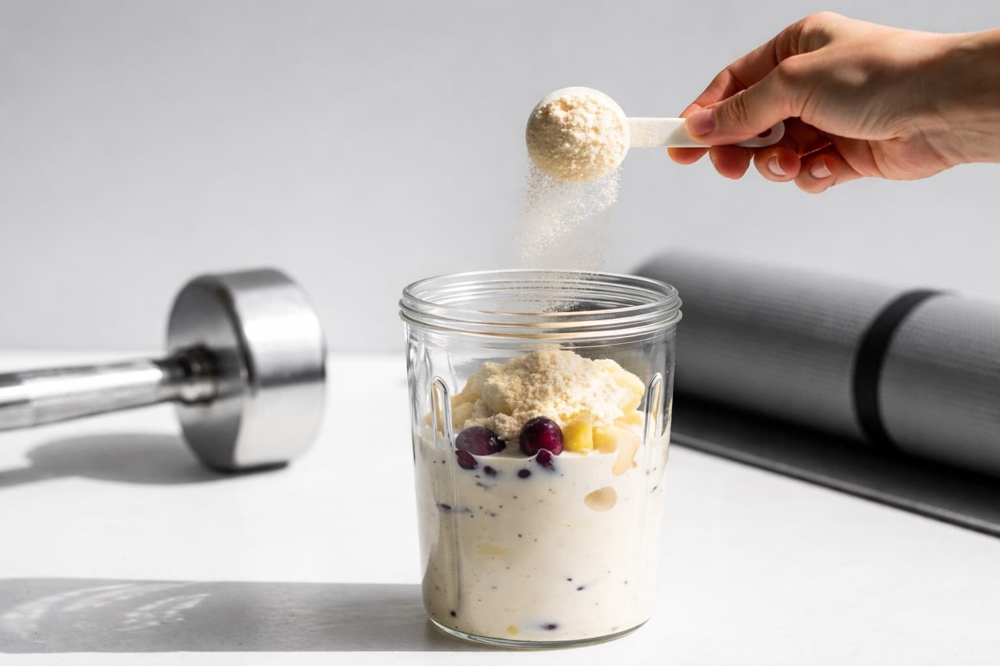
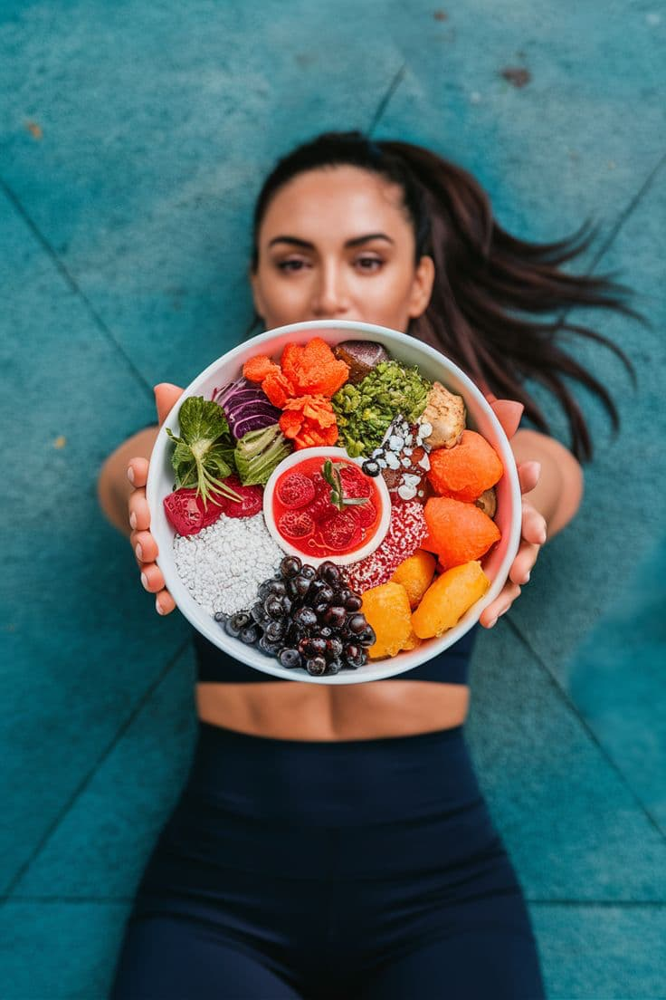

Las últimas tendencias en moda, belleza y lifestyle, inspiración de celebridades, gastronomía, deporte y los temas que marcan la conversación en Aloure.
DEPORTE
8 de febrero de 2026
Incorporar el deporte a tu rutina no siempre requiere grandes esfuerzos, sino constancia y equilibrio.
Cada vez más personas están integrando el movimiento como parte natural de su día a día, sin necesidad de rutinas extremas o largas sesiones de entrenamiento. Caminar más, elegir escaleras, hacer estiramientos o practicar un deporte que realmente disfrutes puede marcar una diferencia significativa en tu bienestar.
El deporte, visto desde un enfoque lifestyle, no solo mejora la condición física, también aporta claridad mental, energía y una sensación de balance que se refleja en otras áreas de la vida. La clave está en encontrar una actividad que se adapte a tu ritmo y convertirla en un hábito sostenible.
Practicar yoga en casa se ha convertido en una de las formas más accesibles de mantenerse activo y en equilibrio. No requiere más que un espacio tranquilo y unos minutos al día para desconectar del estrés y reconectar con el cuerpo.
El concepto de active lifestyle ha tomado fuerza porque propone una visión más realista del deporte: moverse por bienestar, no por presión. Rutinas cortas, actividades al aire libre, deportes recreativos o sesiones ligeras de gimnasio forman parte de esta tendencia que busca integrar el movimiento sin alterar el ritmo cotidiano.
Adoptar este enfoque permite disfrutar más el proceso, reducir el estrés y mantener la motivación a largo plazo. Se trata de construir una relación positiva con el ejercicio, donde el objetivo principal es sentirse bien y mantener un estilo de vida activo de forma natural.

Entre estudios, trabajo y responsabilidades, encontrar tiempo para moverse puede parecer complicado. Sin embargo, integrar el deporte como parte del lifestyle ayuda a crear momentos de pausa, liberar tensión y recargar energía.
Actividades simples como entrenar unos minutos, practicar fútbol recreativo, salir a correr o incluso realizar ejercicios de movilidad en casa pueden aportar beneficios físicos y emocionales. Más que una meta estética, el deporte se convierte en un aliado para mantener balance, bienestar y una mejor calidad de vida.

El deporte y la alimentación mantienen una relación directa cuando se busca bienestar integral. No se trata de dietas estrictas ni restricciones, sino de aprender a escuchar el cuerpo y darle la energía que necesita para mantenerse activo.
Elegir comidas balanceadas, hidratarse correctamente y mantener horarios regulares puede influir en el rendimiento físico, pero también en el estado de ánimo y la concentración. Integrar hábitos alimenticios saludables junto al movimiento diario permite sostener un estilo de vida activo sin sentirlo como una obligación.


Adoptar un estilo de vida activo es un proceso personal que combina movimiento, nutrición y bienestar emocional. Más allá del rendimiento físico, se trata de encontrar un equilibrio que permita sentirse bien, mantener energía en el día a día y construir hábitos que realmente se adapten al propio ritmo de vida. No se trata de hacerlo perfecto, sino de hacerlo sostenible, entendiendo que pequeños cambios constantes pueden generar un impacto positivo tanto en la salud física como en el bienestar mental.